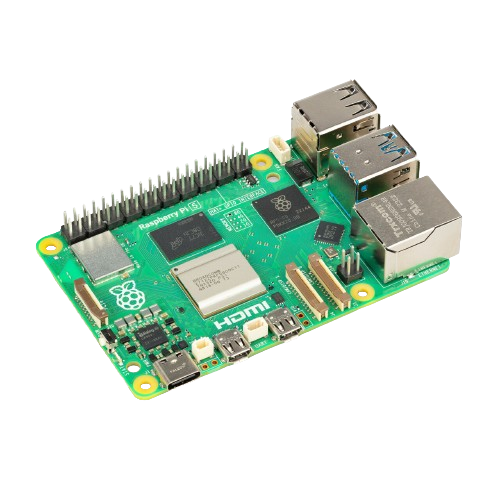
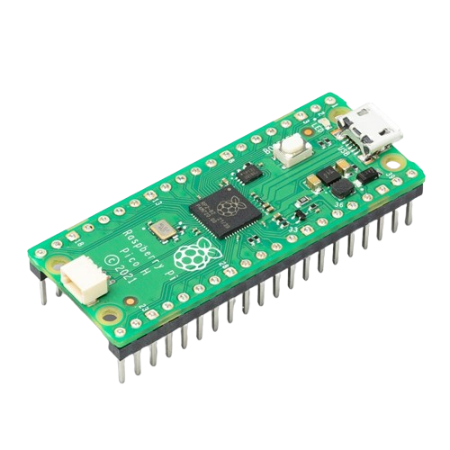
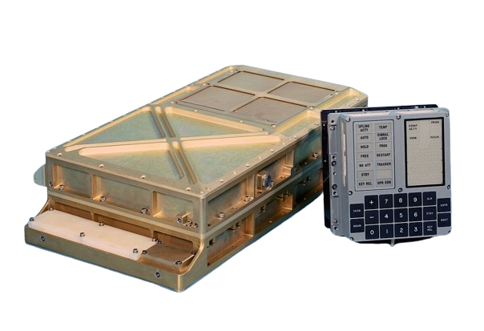

In modern times computers have become very powerful and we also have made very tiny, efficient, and some what powerful Sbcs (Single board computers). These computer are so much more powerfull than even the first computer to bring man to the moon.
The Raspberry Pi 5 and the Raspberry Pi Pico are prime examples of this.
| Raspberry Pi 5 | Raspberry Pi Pico | Apollo Guidence Computer | |
|---|---|---|---|
| Images |  |  |  |
| Clock Speed | 2.4Ghz | 300Mhz | 2Mhz |
| Power Usage | 2.7w | 0.46w | 55w |
| Memory | 1GB, 2GB, 4GB, 8GB | 264KB | 4KB |
| Storage | >500GB | 16MB | 32KB |